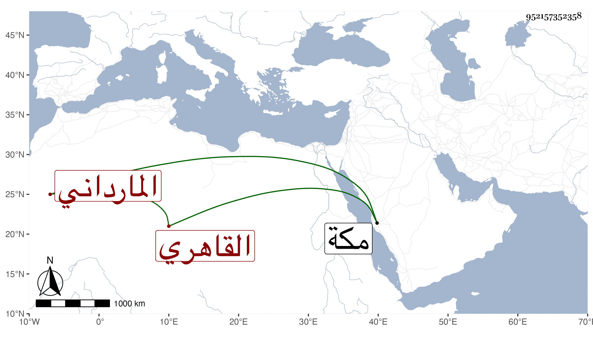

0902Sakhawi.DawLamic.ITO20230111-ara1.EIS1600.952157352358
Biography ID: 952157352358
550
أحمد بن محمد بن محمد القاهري المارداني ويعرف بالهنيدي الشهاب بن الشمس ابن ناصر الدين أحد التجار . ولد سنة ست وخمسين وثمانمائة وكان جده مديما لزيارة الشافعي والليث في أوقاتهما ويسقي الماء للتبرك فيهما ويجلس على البسطة التي على يسار الداخل للشافعي قبل الوصول إلى باب القبة ادبا ، واختص بالدوادار دولات باي المؤيدي فاتفق أنه شفع عند رأس نوبته في تخفيف بعض الظلامات فأبى فلما علم الأمير بذلك صرفه واستقر به مكانه مع إبطاله ما جرت العادة به من تقريره على رؤوس النوب ونشأ حفيده فقرأ القرآن أو أكثره وتعانى التجارة وصحب بني القارئ وكان يصل الكثير من أهل مكة البر منهم على يديه بل ربما يصلهم من نفسه وكثرت إقامته بمكة على خير من الجماعات والطواف أحسن الله إليه .
